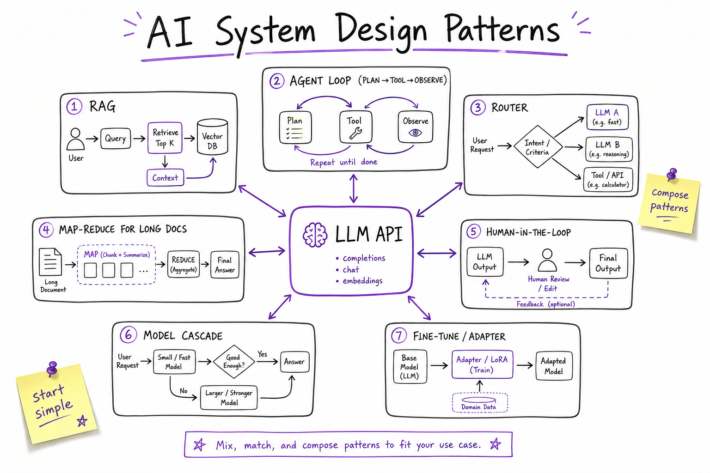
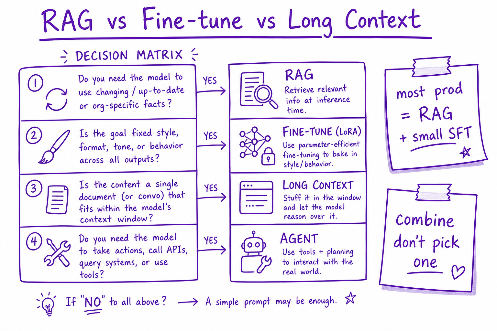
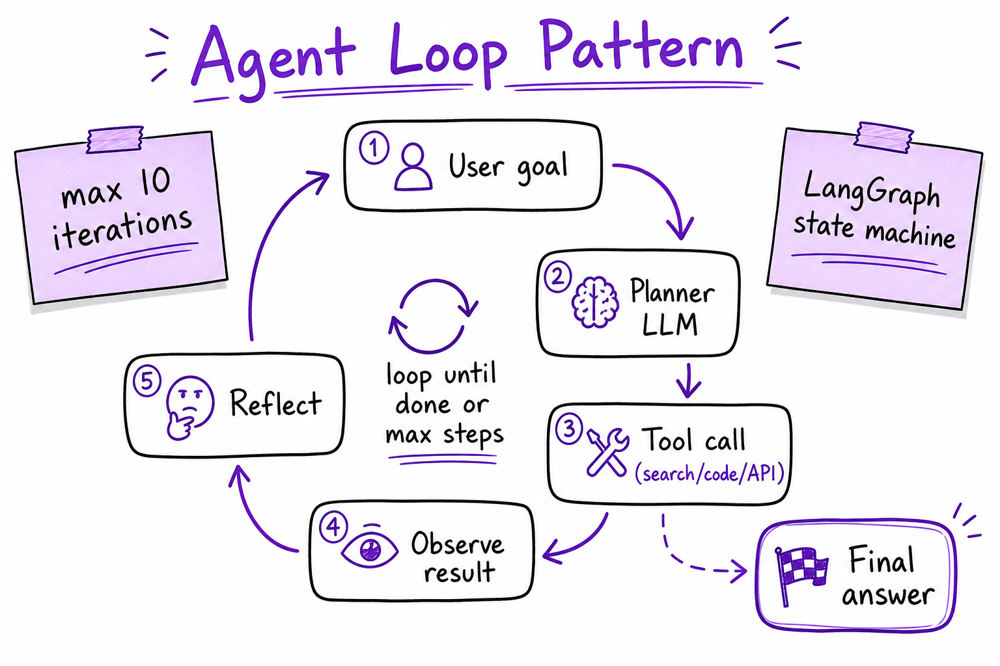

AI System Design Patterns // Fundamentals
Reusable architecture patterns for production AI: RAG, agent loops, routers, map-reduce, human-in-the-loop, and model cascades — when to compose each.

Production AI composes patterns around the LLM primitive: retrieval for facts, agents for tools, routers for cost, map-reduce for long docs.
01 — What & Why
Interview system design for AI is composing patterns around next-token prediction — not drawing one box labeled 'GPT'. Pick RAG vs fine-tune vs agent based on requirements.
01a — Core Concepts
| Pattern | Purpose | Gotcha |
|---|---|---|
| RAG | Ground in external KB | Retrieval quality is bottleneck |
| Agent loop | Plan, tool, observe, repeat | Runaway loops without max steps |
| Router | Pick model/tool by intent | Misroute hurts quality |
| Map-reduce | Summarize long docs in chunks | Loses cross-chunk refs |
| HITL | Human approves high-risk | Latency + ops cost |
01b — API Surface
# LangGraph agent sketch
graph.add_node("plan", planner)
graph.add_node("tool", tool_executor)
graph.add_edge("plan", "tool")
graph.add_conditional_edges("tool", should_continue)02 — When to Use / When NOT
| Need | Pattern | Avoid |
|---|---|---|
| Fresh facts | RAG | Fine-tune alone |
| API actions | Agent + tools | Plain completion |
| 100-page doc | Map-reduce or RAG | Single prompt |
| Cost at scale | Router cascade | One frontier model |
03 — Architecture
Client -> API Gateway -> [Router] -> Pattern orchestrator
RAG | Agent | Map-Reduce | Direct LLM
-> Guardrails -> Response04 — Deep Dive: RAG Pattern

Decision matrix: RAG for changing facts, fine-tune for style, long context when doc fits once, agents when tools needed.
Retrieve → rerank → inject → generate → cite. See RAG End-to-End.
05 — Deep Dive: Agent Loop

Plan → tool call → observe result → reflect until done or max iterations.
State machine with max 5-10 steps. See Agent Architectures and LangGraph.
06 — Deep Dive: Router & Model Cascade
Intent classifier routes to specialist prompts, tools, or model tiers. See Cost & Latency Tradeoffs.
07 — Deep Dive: Map-Reduce for Long Context
Chunk document, map (summarize/extract per chunk), reduce (merge). Use when doc exceeds context and full RAG index not ready.
08 — Deep Dive: Human-in-the-Loop
Queue for approval on low confidence or regulated outputs. Production Agent.
09 — Production & Ops
- Start simplest pattern that meets requirements
- Observability per pattern stage
- Feature flags to swap patterns
- Golden eval per pattern change
10 — Where It Shows Up
11 — Common Pitfalls
- Agent when single RAG call suffices
- Map-reduce losing global context
- No max steps on agent loops
- Over-engineering before baseline eval
- Mixing patterns without clear ownership